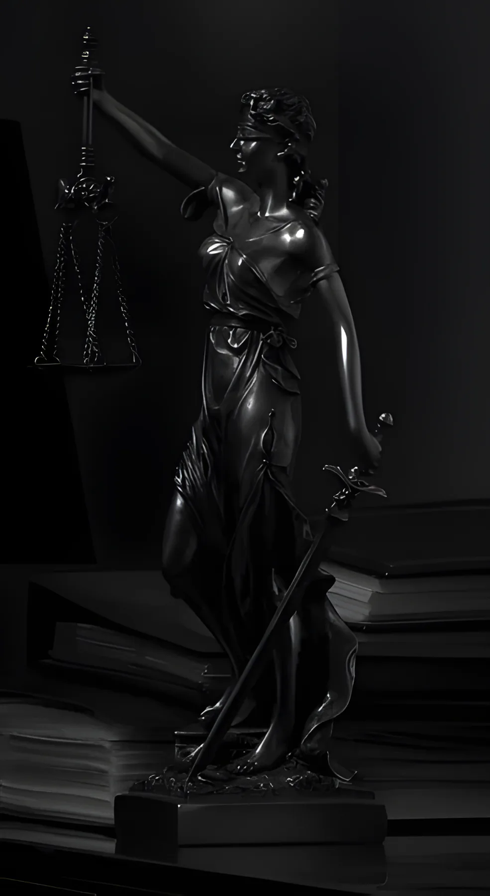
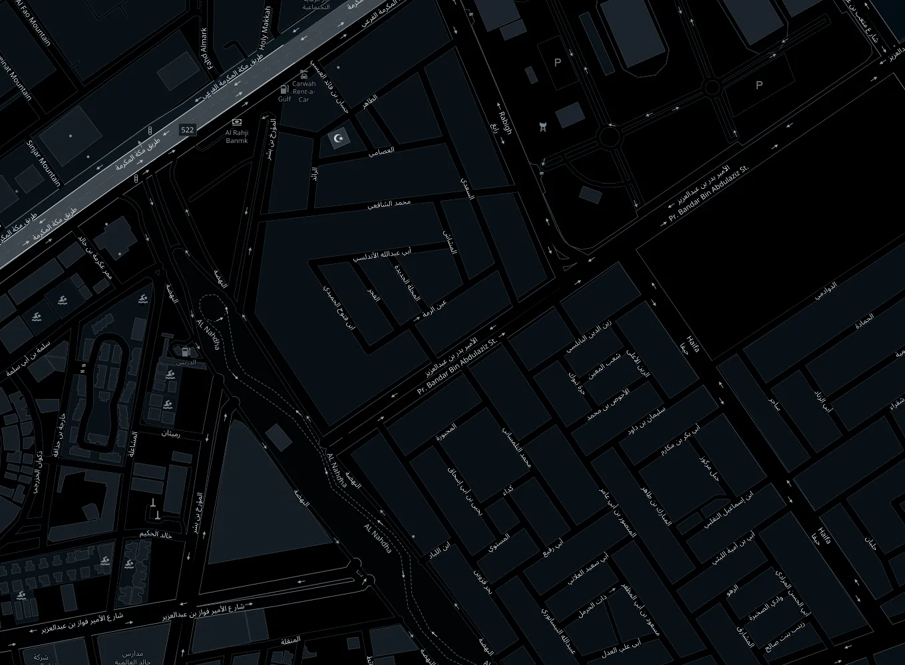

Yasir SulaimanAlyousefياسر بن سليمان اليوسف
Lawyer and notary. He runs an independent law firm and notary office on Prince Badr Ibn Abdul Aziz, Ar Rabwah, Riyadh, and takes cases in any region of Saudi Arabia.
Two licences from the Ministry of Justice
It lets him advise you and argue your case before the courts of Saudi Arabia, from the first hearing to the Supreme Court.
It lets the office notarize documents itself: property transfers and mortgages, powers of attorney, debt acknowledgements and company contracts.
Where he studied
Law in Riyadh, then the law of cyberspace in France.
- 2012
Bachelor's degree in Law
College of Law and Political Science, King Saud University. Grade “Very good”.
- 2015
Master's degree in Cyberspace Law
Faculty of Juridical, Political and Social Sciences, Université Lille II Droit et Santé, France. With distinction “Assez Bien”.

In his words
“We will carefully examine every angle of your case, and we will argue your case at every turn.”Yasir S. Alyousef
Find the office
Prince Badr Ibn Abdul Aziz, Ar Rabwah, Riyadh 12821
P.O. Box 45199, Riyadh 11512
- Office+966 11 220 0360
- Mobile+966 54 838 8884
- Emailcontact@alyousef.law
- X@alyousef_law
